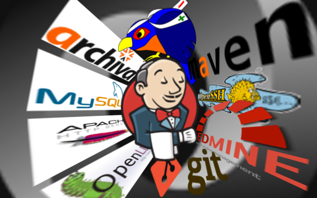
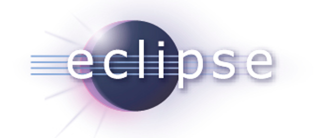

Hola, mi nombre es
Ricardo García Fernández / @ricardogarfe
PDIITSCStack
Proceso de Desarrollo Iterativo e Incremental a través de SidelabCode Stack
Tutores:
Patxi Gortázar Bellas
Micael Gallego Carrillo
This work by Ricardo Gracía Fernández - ricardogarfe [at] gmail [dot] com is licensed under a Creative Commons Attribution 3.0 Unported License.

Qué, porqué y para qué
¿ Qué es sideladCodeStack ?
¿ Por qué aparece ?
¿ Para qué sirve ?
Objetivos

Crear software de calidad a través del uso de las herramientas ayudados por las metodologías y procesos de desarrollo.
Consciencia y constancia
“El progreso, lejos de consistir en el cambio, depende de la capacidad de retención. Cuando el cambio es absoluto no queda ningún ser para mejorar y ninguna dirección se ajusta para una posible mejora: y cuando la experiencia no se conserva, como entre los salvajes, la infancia es perpetua. Aquellos que no pueden recordar el pasado están condenados a repetirlo.“
Metodologías y Procesos
Dejarnos guiar por las metodologías existentes ayudados por los procesos para poder adaptarlos a nuestras necesidades.
Sencillez
Algo sencillo para el usuario es el doble de efectivo.
- gráficas de barras
- compra con un click
- etc...
Objetivo tangible
“Done is better than perfect“
Requisitos
Metodologías Ágiles
- Individuos e interacciones sobre procesos y herramientas
- Software funcionando sobre documentación extensiva
- Colaboración con el cliente sobre negociación contractual
- Respuesta ante el cambio sobre seguir un plan
Iterativa e Incremental
“Divide y Vencerás: resolver un problema difícil, dividiéndolo en partes más simples tantas veces como sea necesario, hasta que la resolución de las partes se torna obvia.“
Iterativa e Incremental

Marco de trabajo que ofrece la metodología Iterativa e Incremental
Procesos de Desarrollo
Actúan de Catalizadores
TDD

Proceso de desarrollo guiado por pruebas.
Feature branch

Desarrollo dirigido por ramas (M. Fowler)
Continuous Integration

Proceso de Integración Continua.
Continuous Delivery & Deployment

Proceso de Entrega y Despliegue Continuo
Herramientas
“poner nombres a las cosas“
- Gestión de usuarios, permisos y roles
- OpenLDAP
- ITS - Gestor de tareas
- Redmine
- SCM Source Code Management
- Git
- Revisión de código
- Gerrit
- Gestión de librerías
- Archiva
- Gestión de la integración y despliegues
- Jenkins
¿ Se puede unificar ?

Un nuevo compañero
Las herramientas ALM
Application Lifecycle Management Encargada de la gestión del ciclo de vida de una aplicación

Forjas de Desarrollo
Entorno de desarrollo colaborativo de Software
“Crear un sistema modular que permita integrar estas herramientas del ciclo de vida de un proyecto como vehículo en la forja de desarrollo“
Nube de forjas

Análsis 1a iteración
Requisitos para adapatar el proceso Iterativo e Incremental:
- FLOSS
- ITS
- Repositorios privados y públicos
- Entorno en un servidor propio
- Desarrollo
- Modularizado
- Iterconexiones
Análsis 2a iteración
Requisitos para adapatar el proceso Iterativo e Incremental:
- Wiki
- FTP
- Code-review
Resultados
El análisis generó la necesidad de crear una forja de desarrollo Libre y usable en distintos entornos.
SCStack
Nueva rueda FLOSS

El conjunto de herramientas apiladas y conectadas que dan forma a la Forja.
Componentes SCStack
Arquitectura
Dividida en tres niveles:
- Administración
- API Rest
- API
Actores
Desarrollador
Si no hay desarrollador no hay proyecto...
Más vale una imagen...

¿ Quién orquesta ?

Aprovisionamiento
“Accción o efecto de aprovisionar, aprovisionar : abastecer.“
Aplicado a la Ingeniería del Software el Aprovisionamiento nos provee de los componentes necesarias para construir una solución.
Puppet
exec { "apt-update":
command => "/usr/bin/apt-get update",
}
class { "scstack":
# Superadmin password. Will be used to access the SidelabCode Stack Console *******
sadminpass => "*******",
# Or whatever IP specified in Vagrantfile
ip => "192.168.33.10",
domain => "sidelabcode.scstack.org",
baseDN => "dc=sidelabcode,dc=scstack,dc=org",
# Your company/organization name
compname => "SidelabCode Stack version 0.4",
# A name to be displayed within Redmine
codename => "SCStack ALM Tools",
}
Vagrant
Inicio
$ vagrant init
Configuración
config.vm.box = "precise64"
config.vm.network :hostonly, "192.168.33.10"
config.vm.provision :puppet, :module_path => "modules"
Arranque
$ vagrant up
¿ Hemos llegado ya ?
El proyecto gira en torno a un objetivo conciso:
“Crear un marco de trabajo para Integrar el uso de la metodología Iterativa e Incremental a través de las herramientas necesarias“
Se ha conseguido integrar de forma satisfactoria el proceso de desarrollo Iterativo e Incremental en el marco de trabajo de SCStack
Siguientes Iteraciones
Como parte del proceso iterativo e incremental, las siguientes iteraciones han de aportar valor:
- Refactorización del código
- Publicitar el uso de la herramienta
- Modularizar la instalación